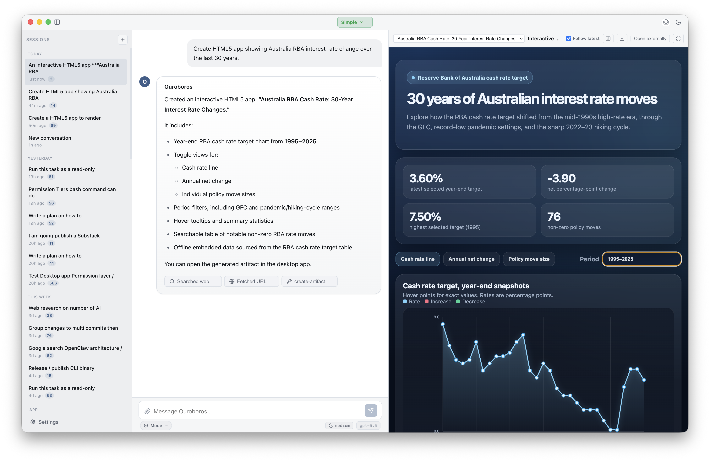
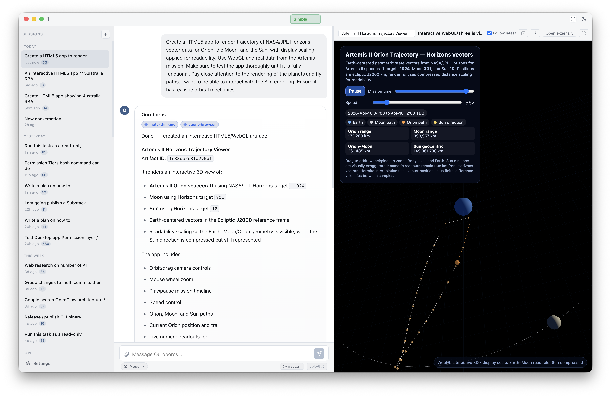
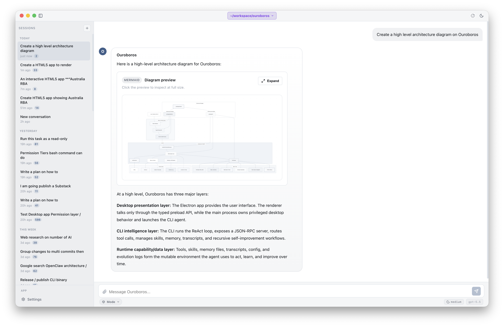

{kind=link}
{kind=link}
{kind=link}
Reflection browser
Reflection and evolution history make the agent's learning process inspectable instead of burying behavior changes inside hidden prompts.
A self-improving, human-controlled local workspace AI agent for real projects. Ouroboros reflects on work, preserves memory, grows through Agent Skills, and keeps every improvement inspectable.
Self-improvement is permissioned and visible. Beta software for technical users; review approvals, diffs, credentials, and workspace access carefully.

Real desktop sessions: the agent reasons in chat, calls tools with permission, and ships sandboxed HTML5 app artifacts you can open, expand, and download from the conversation.

NASA/JPL Horizons vector data for Orion, the Moon, and the Sun rendered as an embedded WebGL/Three.js artifact with playback, zoom, and orbit controls.

Ask for a system diagram and the agent responds with a Mermaid artifact you can expand fullscreen, zoom, and inspect at any layer.
Ouroboros is built around a visible improvement loop. It observes work, reflects on what happened, records durable memory, and turns repeated useful patterns into skills under human control.
Reflection and evolution history make the agent's learning process inspectable instead of burying behavior changes inside hidden prompts.
Memory, transcripts, checkpoints, and working state preserve context across sessions so the agent can improve without losing accountability.
Code and configuration self-modification is a disabled-by-default approval tier. Generated skills are validated and self-tested before they become available in the catalog, with every automatic improvement recorded in the evolution log.
Meta Thinking is a built-in SecondOrder skill for deliberate self-critique. It is not enabled by default; turn it on for complex plans, tradeoff decisions, troubleshooting, and moments where uncertainty should be visible instead of hidden.
The skill classifies the task and gates meta mode so simple requests stay direct, while high-uncertainty work gets a stronger control loop.
It pulls out the goal, constraints, response strategy, and compact plan before the agent commits to an answer or implementation path.
A critique pass checks for missing context, unsupported assumptions, weak plans, and limitations that could materially change the result.
When useful, the agent can surface concise confidence, limitations, and context gaps so you can decide whether to proceed, steer, or provide more information.
Ouroboros can work through real tasks while keeping tool calls, permissions, memory, and self-improvement visible.
Agent actions are surfaced as inspectable tool events. You can see what was read, run, or proposed.
File edits, shell commands, network access, and self-improvement follow the permission model instead of assuming unattended control.
Memory and reflection history make repeated behavior easier to understand and correct over time.
Ouroboros supports Workspace mode for repository-aware work and Simple mode for focused chat. It can reason over code, docs, tests, skills, artifacts, and project history while keeping sensitive actions behind review.
SKILL.md instructions.
Read files, inspect context, search code, and understand the shape of the project before acting.
Run local tools, propose edits, create artifacts, and request approval when an action crosses a safety boundary.
Update memory and evolution logs so repeated work becomes more consistent without becoming opaque.
The product surface is more than chat. Ouroboros combines self-improvement, memory, skills, artifacts, subagents, and team workflows into one local agent runtime.
Browse remembered context, checkpoints, reflections, crystallizations, and evolution history to understand why the agent changes.
Use Workspace mode when the agent should operate inside a repository, or Simple mode when you want a lighter conversation surface.
Create self-contained HTML app artifacts, preview them safely in the desktop app, and keep generated work attached to the session.
Load reusable capabilities through the Agent Skills SKILL.md format
so learned workflows can become explicit behavior.
Delegate focused exploration, review, or implementation work to subagents while keeping lifecycle events visible in the main thread.
Coordinate multiple agents through task graphs, quality gates, debate, review, and cleanup flows for larger projects.
The CLI owns the agent runtime. The Electron desktop app gives the same core a focused interface for onboarding, chat, approvals, settings, artifacts, and RSI history.
Run single-shot prompts, interactive sessions, JSON-RPC mode, local tools, memory, reflection, MCP, and skill workflows from the terminal.
./dist/ouroboros -m "Summarize this repo"
Use chat, provider setup, Workspace and Simple mode, file attachments, approvals, HTML5 app artifacts, Memory and Reflection browser, subagents, and team surfaces in one app.
cd packages/desktop
bun run dev
The launch posture is controlled public beta. The goal is trust, inspectability, and repeat use rather than promises of full autonomy.
Start with projects and credentials you are comfortable testing with. Ouroboros can read and write workspace files when you approve tool use.